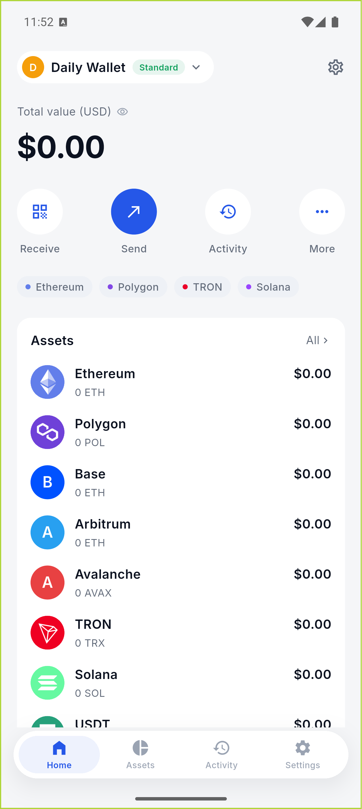
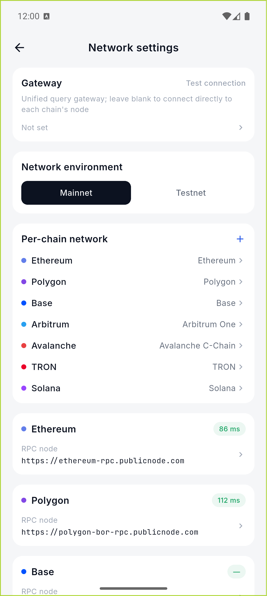
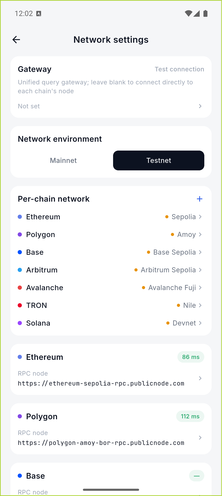
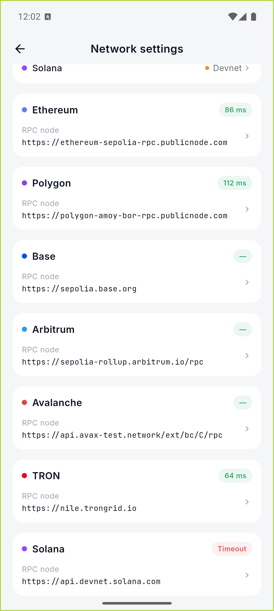
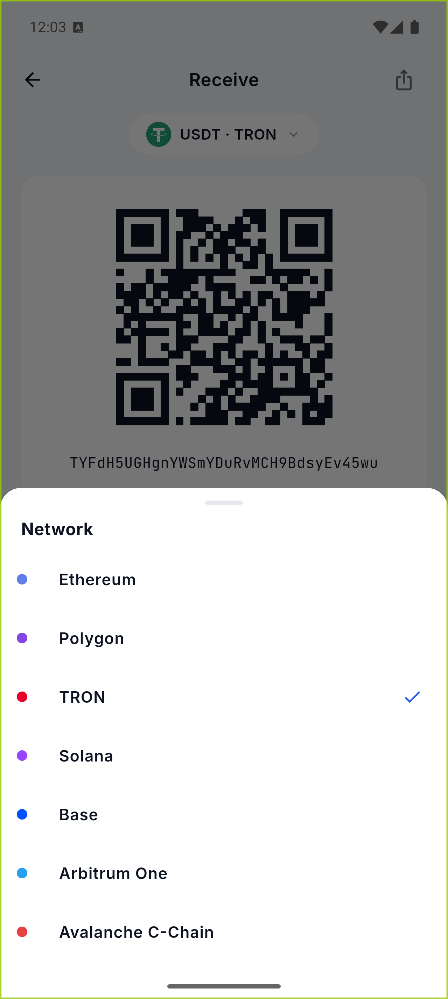
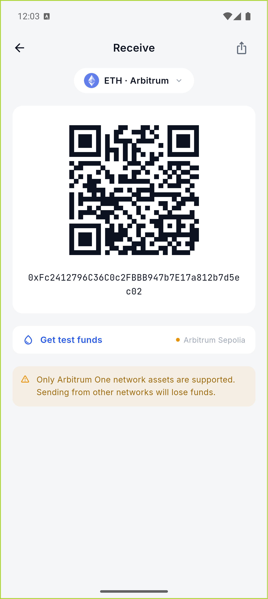
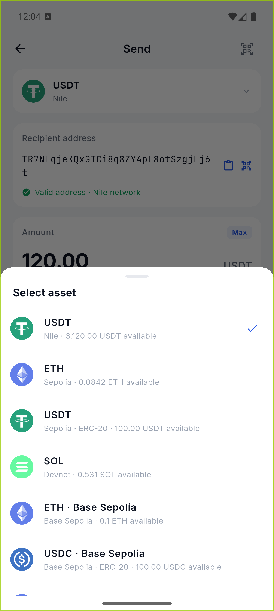
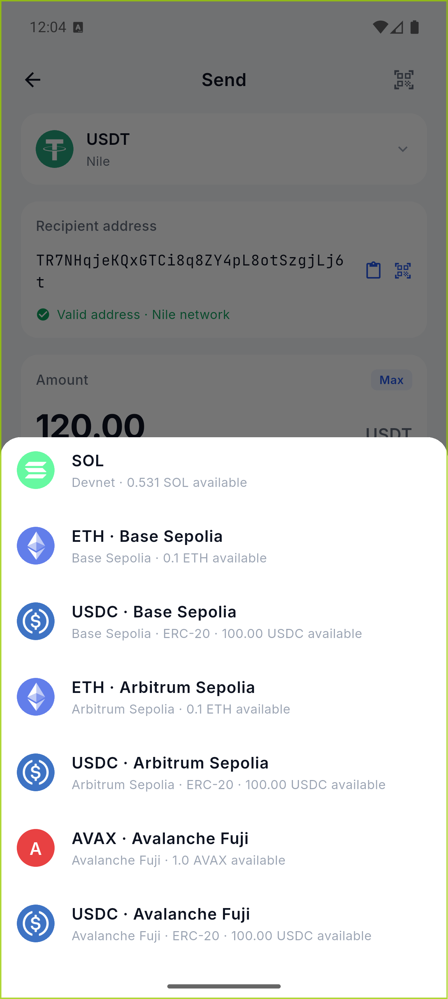

Base、Arbitrum、Avalanche
接入与真实测试报告
三条新增 EVM 链均完成主网/测试网配置、地址派生、余额读取、原生币转账、USDC 转账、签名、广播和浏览器链接接入。测试交易由 Android 模拟器内的真实 Wallet Core 本地签名完成。
结论
Base Sepolia
通过余额读取、ETH 转账、USDC 转账、回执确认均成功。
Arbitrum Sepolia
通过修复 L2 gas limit 与 maxFee 安全余量后，两种转账均成功。
Avalanche Fuji
通过AVAX 水龙头入金、AVAX 转账和 USDC 转账均成功。
链与资产配置
| 网络 | Chain ID / RPC | USDC 合约 |
|---|---|---|
| Base / Base Sepolia | 8453 / 84532 | 0x833589fCD6eDb6E08f4c7C32D4f71b54bdA02913 |
| Arbitrum One / Sepolia | 42161 / 421614 | 0xaf88d065e77c8cC2239327C5EDb3A432268e5831 |
| Avalanche C-Chain / Fuji | 43114 / 43113 | 0xB97EF9Ef8734C71904D8002F8b6Bc66Dd9c48a6E |
真实交易证据
| 链 | 资产 | 交易哈希 | RPC 回执 |
|---|---|---|---|
| Base Sepolia | ETH | 0x619c…148f | status 0x1 block 0x2a909ba |
| Base Sepolia | USDC | 0x898e…0648 | status 0x1 block 0x2a909c1 |
| Arbitrum Sepolia | ETH | 0xc8af…1fa0 | status 0x1 block 0x115e53ec |
| Arbitrum Sepolia | USDC | 0xd4ad…8d76 | status 0x1 block 0x115e5437 |
| Avalanche Fuji | AVAX | 0x7b34…04bb | status 0x1 block 0x36ac8fe |
| Avalanche Fuji | USDC | 0xc683…c626 | status 0x1 block 0x36ac904 |
测试中发现并修复
Arbitrum 普通转账报 intrinsic gas too low | 为 Arbitrum 原生/代币转账设置合适的 L2 gas 下限。 |
max fee per gas less than block base fee | 为 Arbitrum maxFee 加入下一块波动安全余量。 |
| 网络设置只显示旧的 4 条链 | 补齐 Base、Arbitrum、Avalanche 的主网/测试网卡片与 RPC。 |
| 测试网切换后 RPC 文案仍显示主网 | 界面 RPC 改为跟随活动网络，且用户自定义 RPC 仍具有最高优先级。 |
| 发送资产列表使用演示余额 | 联网模式改为读取 MarketController 的真实原生币/代币余额；失败或未加载时不再伪造可用余额。 |
模拟器截图

首页资产列表已经出现 Base、Arbitrum、Avalanche。

主网网络设置：7 条链完整列出。

测试网一键切换：Base Sepolia、Arbitrum Sepolia、Avalanche Fuji。

活动测试网 RPC：Arbitrum 与 Avalanche 的真实节点地址。

收款链选择器已扩展到 7 条链。

Arbitrum 收款页与 EVM 地址展示。

发送资产选择器：Base / Arbitrum 原生币与 USDC。

发送资产选择器：Avalanche Fuji AVAX 与 USDC。
验证范围
静态分析无 error；Flutter 单元/组件测试 327 项全部通过；地址派生使用 Wallet Core；交易在 Android 模拟器内经系统生物识别授权后本地签名；广播后通过各链 JSON-RPC 的 eth_getTransactionReceipt 再确认，六笔交易均返回 status = 0x1。
测试网代币没有美元估值；这是刻意行为。应用以 “--” 展示法币价值，避免把测试币误报成真实资产。